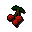

Food Store
Inventory config
wydinstoreRun by  Wydin. Open in knowledge graph →
Wydin. Open in knowledge graph →
Located in: Rimmington
Stock
| Item | Stock | Value | Sells for |
|---|---|---|---|
| 3 | 10 gp | 10 gp | |
| 1 | 1 gp | 1 gp | |
| 1 | 1 gp | 1 gp | |
| 3 | 1 gp | 1 gp | |
| 3 | 2 gp | 2 gp | |
 Redberries | 1 | 3 gp | 3 gp |
| 0 | 12 gp | 12 gp | |
| 1 | 10 gp | 10 gp | |
| 3 | 4 gp | 4 gp | |
| 3 | 4 gp | 4 gp | |
| 1 | 1 gp | 1 gp |
Shop sells at 100.0% of item value and buys at 70.0%.